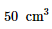
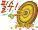
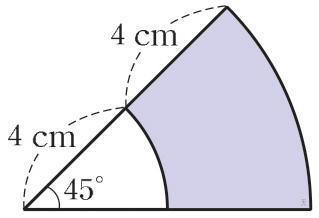
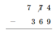

서술형
1
문제
다음 식을 만족하는 유리수
a,b
에 대하여 ab
의 값을 구하시오.
(
)
1
문제
(다)의 언어 자료에 나타난 남북 언어의 차이점을 서술하시오.
객관식
1
문제
다음 그림과 같이 밑면이 정사각형이고, 높이가
9cm
인 정사각뿔의 부피는?

1
문제
개구리의 마음을 생각하며 안에 들어갈 알맞은 마음을 고르시오.
개구리는 편지가 오지 않아
신난다.
궁금하다.
화가 난다.
재미있다.
슬프다.
1
문제

평평한 부분이 있습니다.
네모난 사물함 모양입니다.
둥근 부분이 있어서 잘 굴러갑니다.
평평한 부분이 있어서 잘 쌓을 수 있습니다.

1
문제
다음 중 원기둥은 어느 것일까요?


1
문제
<보기>의 대화에 대한 설명으로 가장 적절한 것은?
<보기>
(가)
의사: 근육이나 인대가 파열된 것은 아니니 약 드시고, 간호사가 일러 주는 대로 얼음찜질하시면 됩니다. 아시겠죠?
환자: 네.
의사: 근육이나 인대가 파열된 것은 아니니 약 드시고, 간호사가 일러 주는 대로 얼음찜질하시면 됩니다. 아시겠죠?
환자: 네.
의사: 이 환자, 럽처는 아니니 엔세이드 쓰면서 얼음찜질하면 되겠네요.
간호사: 네, 알겠습니다.
간호사: 네, 알겠습니다.
(나)
손자: 할머니, 얼른 오세요. 드라마 본방 사수 해야죠.
할머니: 응? 뭔 사수?
손자: 할머니, 얼른 오세요. 드라마 본방 사수 해야죠.
할머니: 응? 뭔 사수?
할머니: 내일이 벌써 동짓달 초하루네.
손자: 네?
손자: 네?
논술형
1
문제

색칠한 부분의 둘레의 길이 구하기다음 그림에서 색칠한 부분의 둘레의 길이를 구하시오.

1
문제
A
,B
두 사람이 시소를 타고 있을 때, 시소가 평형을 이루면 시소의 중심에서 두 사람의 거리와 몸무게 사이에는 다음과 같은 비례식이 성립한다.(중심에서
A
까지의 거리):
(중심에서B
까지의 거리)=
(B
의 몸무게):
(A
의 몸무게)동렬이와 동생이 길이가
⑴
⑵ 동렬이의 몸무게가
6cm
인 시소를 타는데 동생이 시소의 맨 끝에 앉고 두 사람이 앉은 지점 사이의 거리가 5.1cm
일 때, 시소가 평형을 이루었다고 한다. 동렬이와 동생의 몸무게를 각각 x kg
, y kg
이라고 할 때, 물음에 답하세요.⑴
x
와 y
의 관계식을 구하시오.⑵ 동렬이의 몸무게가
50kg
일 때, 동생의 몸무게를 구하시오.1
문제
계산이 잘못된 곳을 찾아 이유를 설명하고 바르게 계산하세요.

단답유순형
1
문제
다음은 소수에 대한 설명이다. 빈칸에 알맞은 말을 써넣으시오.
보다 큰 자연수 중에서 과 자기 자신만을 약수로 가지는 수이며 약수가 개인 자연수이다. 소수 중 짝수는 뿐이고 나머지는 모두 이다.
1
문제
□ 안에 알맞은 수를 써넣으세요.

1
문제
다음은 음식물이 기도에 걸렸을 때 사용하는 응급처치법에 대한 설명이다.
1. 하임리히법 : 음식물이나 아이들의 작은 장난감 등의 이물질이 기도에 걸려 질식할 위험이 있을 때 흉부에 강한 압력을 주어 토해 내게 하는 방법
2. 방법 : 환자의 뒤에서 주먹을 쥐고 환자의 배 위쪽을 강하게 압박하며 밀어 올린다.
2. 방법 : 환자의 뒤에서 주먹을 쥐고 환자의 배 위쪽을 강하게 압박하며 밀어 올린다.
이 방법에 대한 원리에 맞게 ( ) 안에 들어갈 알맞은 말을 각각 쓰시오.
폐를 둘러싼 공간의 부피가 ㉠ ( 줄어들어, 늘어나 ) 폐를 둘러싼 공간 내 기체의 압력이 ㉡ ( 커진다, 작아진다 ). 따라서 폐에 가해지는 압력이 ㉢ ( 커져서, 작아져서 ) 기도를 막고 있던 음식물이 밀려 나오게 된다.
(
)
,
(
)
,
(
)
단답무순형
1
문제
인상 깊은 일을 글로 쓸 때 내용을 정리하는 방법은 무엇인지 빈칸에 들어갈 알맞은 말을 [보기]에서 찾아 쓰시오.
<보기>
일
언제
마음
⑴ , 어디에서, 누구와 있었던 일인지 정리한다.
⑵ 무슨 이/가 있었는지 자세히 떠올린다.
⑶ 어떤 이/가 들었는지 생각한다.
⑵ 무슨 이/가 있었는지 자세히 떠올린다.
⑶ 어떤 이/가 들었는지 생각한다.
(1):(
)
선택
일
언제
마음
(2):(
)
선택
일
언제
마음
(3):(
)
선택
일
언제
마음
1
문제
다음은 그림 ㈑에서 겪은 일을 기억에 남는 일로 정하여 정리한 내용입니다. ㉠과 ㉡에 들어갈 말에 알맞게 선으로 이으시오.
| 언제 | 5월 |
|---|---|
| 어디에서 | 학교 운동장 |
| ㉠ | 친구들과 공 굴리기, 장애물 달리기와 같은 운동을 했다. |
| ㉡ | 친구들과 함께 여러 가지 운동을 해서 즐거웠다. |
⑴ ㉠
⑵ ㉡
㉮
있었던 일
㉯
생각이나 느낌
(1):(
)
(2):(
)
1
문제
다음 [보기]에서 정수가 아닌 유리수를 모두 골라 기호를 쓰시오.
[보기]
ㄱ.
ㄴ. 
ㄷ. 
ㄹ.
ㅁ.
ㅂ.
ㅅ.
ㅇ.
영역선택
1
문제
진주가 계산을 하다 멈췄습니다. 진주가 올바른 답을 구할 수 있도록 도움이 되는 말에 O표 하세요.

나머지가 나누는 수보다 (,) 하므로 몫을 1 ( , ) 해 줍니다.
자유선지
1
문제
그림은 온도가 매우 낮은 액체 질소가 담긴 통에 풍선을 넣었을 때 나타나는 변화를 나타낸 것이다.

풍선 속 기체에서 나타나는 변화에 대한 설명으로 옳은 것은?
기체의 온도
기체의 입자 수
기체 입자의 운동
기체 입자 사이의 거리
낮아짐
증가
빨라짐
멀어짐
높아짐
감소
느려짐
가까워짐
낮아짐
일정
일정함
일정함
낮아짐
일정
느려짐
가까워짐
높아짐
일정
빨라짐
멀어짐